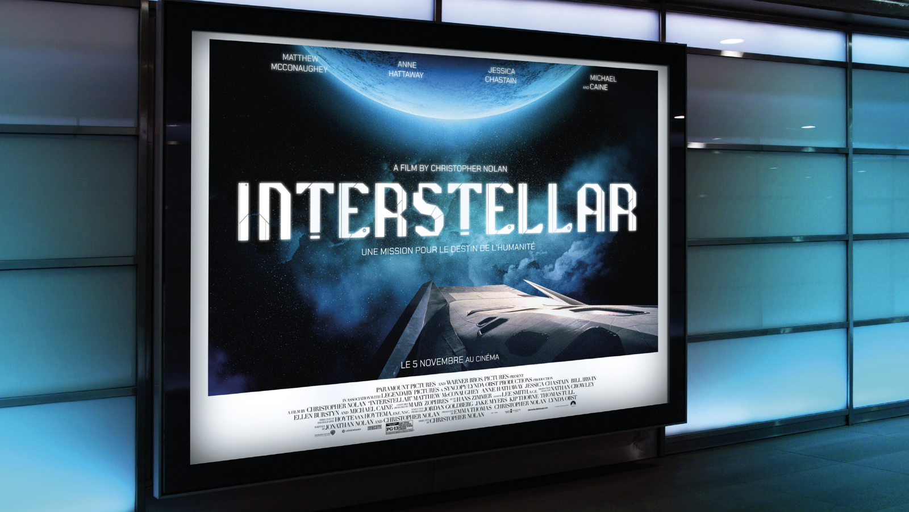
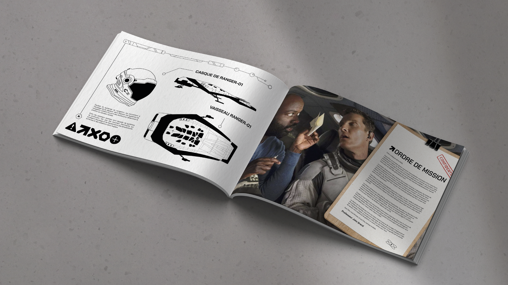
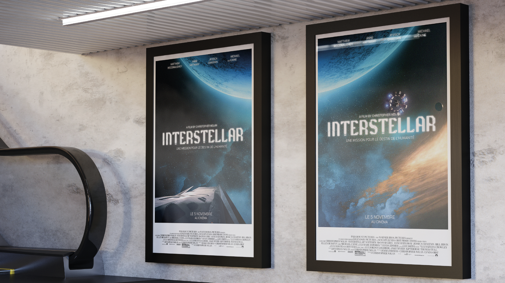
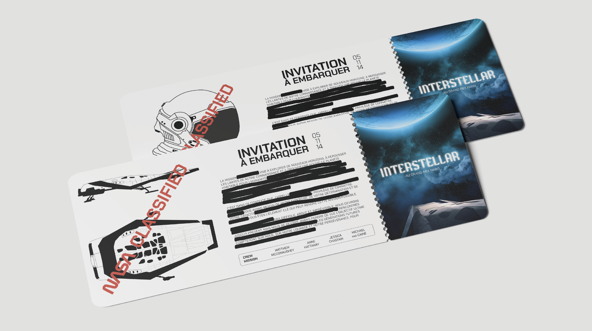

● Design — Campagne marketing
Interstellar
La campagne marketing d'Interstellar repose sur deux axes.
Le premier étant celui de l'expédition spatiale. On cherche à ce que les spectateurs s'évadent et voyagent dans l'univers à travers des plans esthétiques.
Le deuxième axe s'appuie sur un aspect plus confidentiel, s'inspirant des codes de la NASA. Ici, les spectateurs se mettent dans la peau d'un astronaute.



